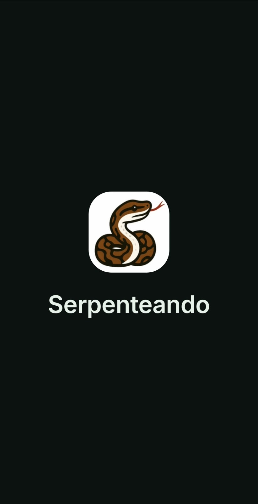
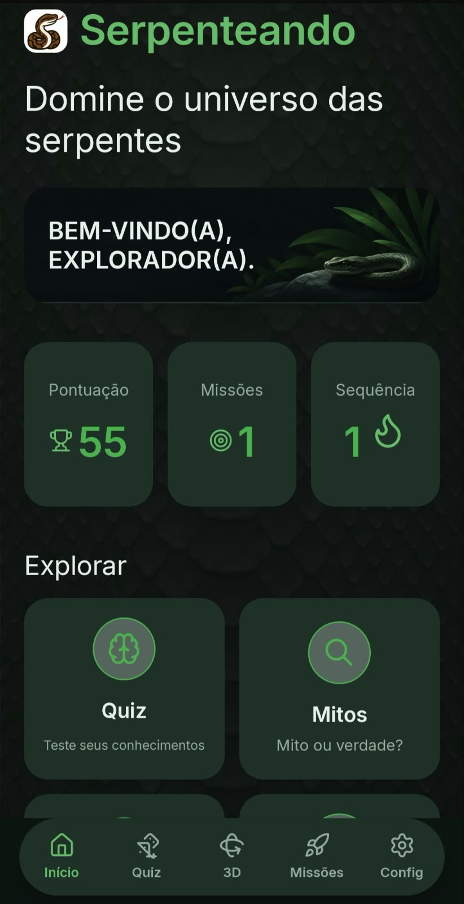
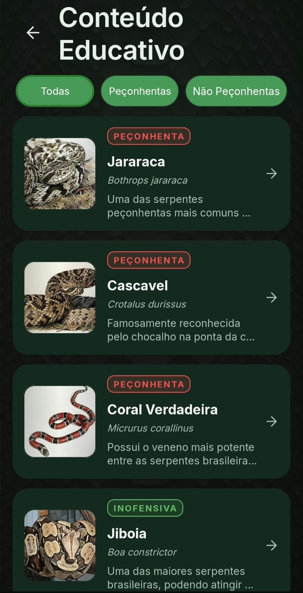
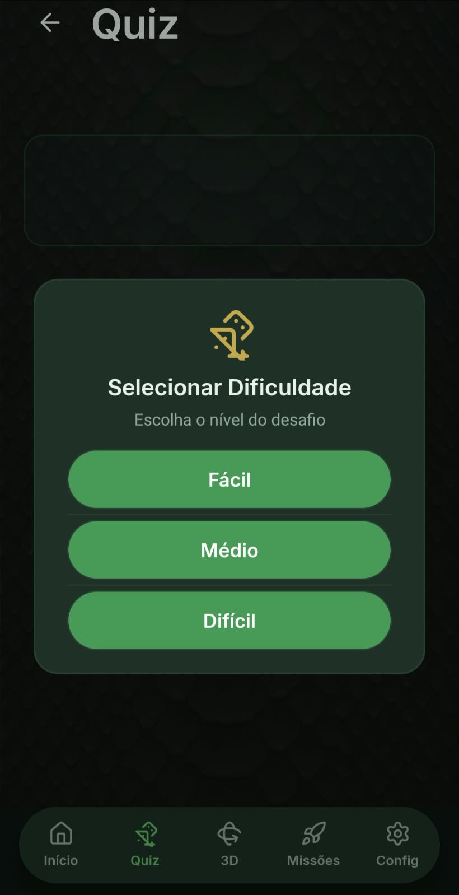
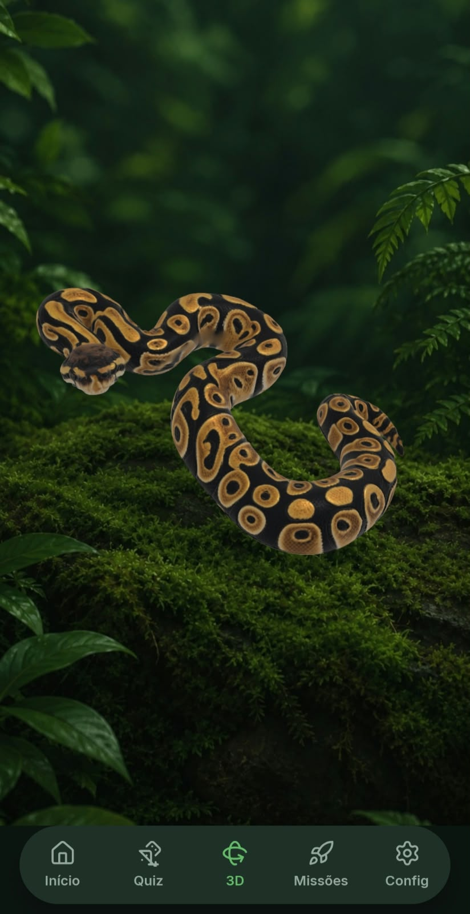
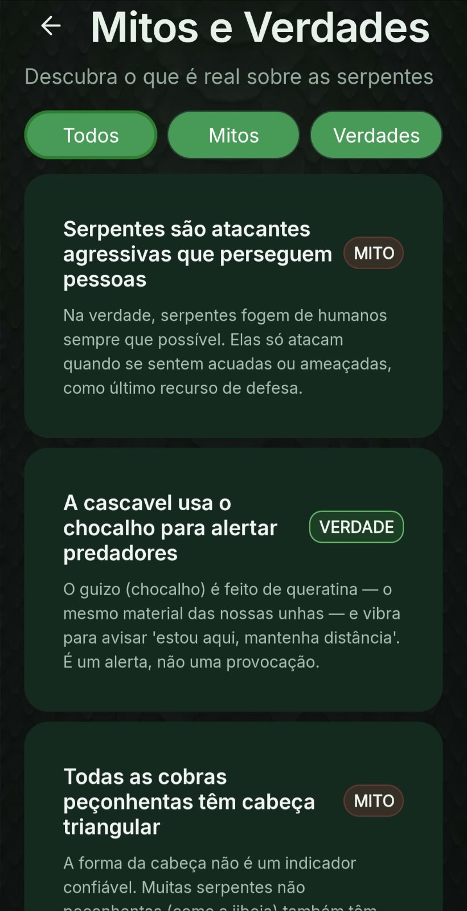
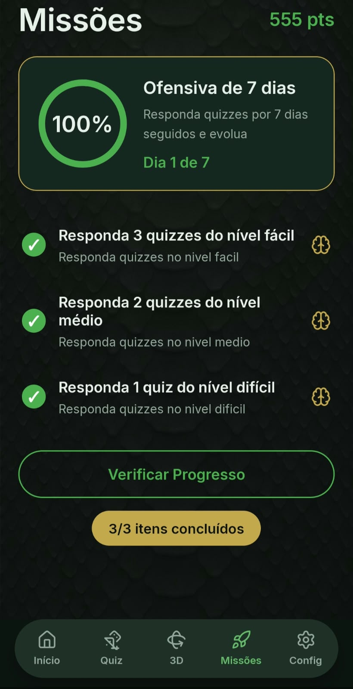
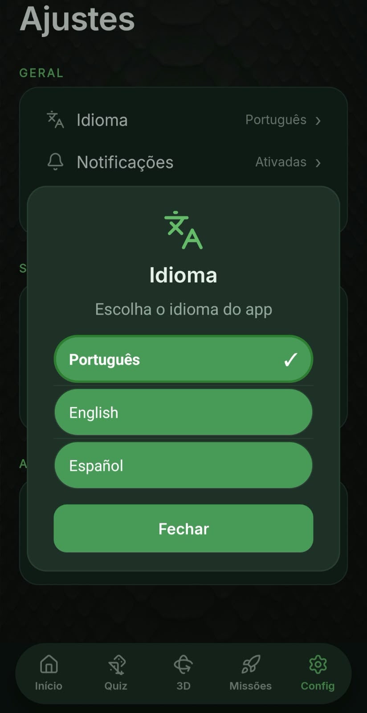
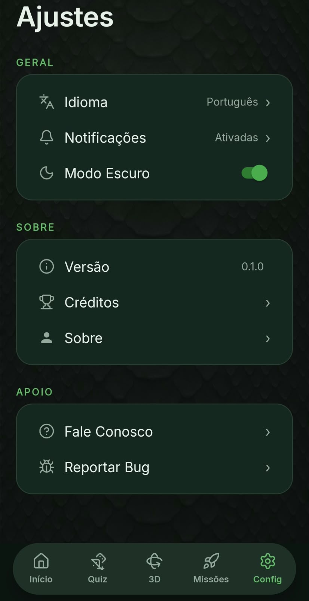
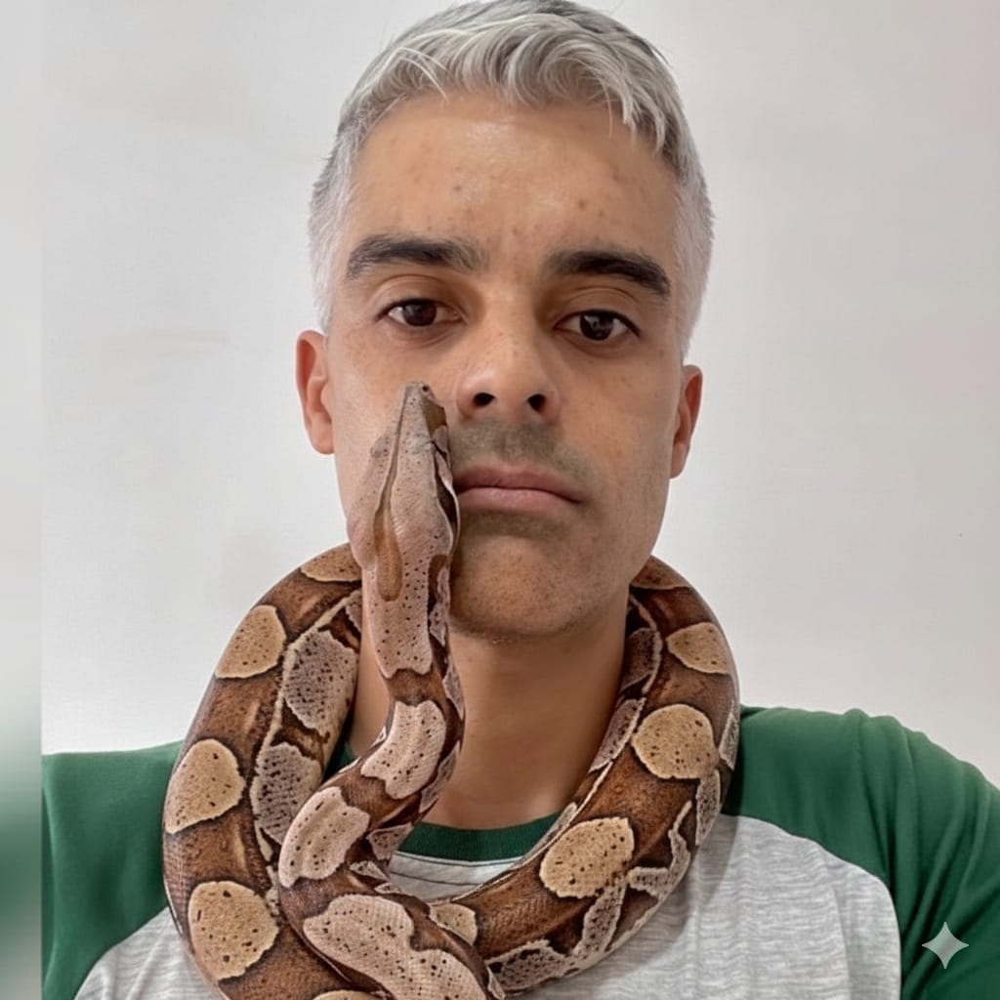

O problema
O conteúdo sobre serpentes costuma aparecer espalhado e distante da rotina do aluno, o que dificulta reconhecer espécies e entender o que fazer em caso de acidente.
TCC · Instituto Federal do Sertão Paraibano (IFSertãoPB)
O Serpenteando é um aplicativo educativo para estudantes do ensino médio que reúne fichas das espécies, quiz com três níveis, missões, mitos e verdades e um modelo 3D interativo da píton-real — tudo em português, inglês e espanhol.
Android 10.0 ou superior · versão 0.1.0

O aplicativo
As telas abaixo são do aplicativo em funcionamento. Percorra no carrossel para conhecer cada parte do Serpenteando.








A tela de inicialização mostra a logo e o nome do app enquanto o conteúdo é carregado.
Ver todos os recursosSobre o projeto
O Serpenteando é um aplicativo para celular criado para ajudar alunos a aprender sobre as serpentes brasileiras, tanto as peçonhentas quanto as que não são. Ele foi desenvolvido do zero em Android, com Java, como Trabalho de Conclusão de Curso do Instituto Federal do Sertão Paraibano (IFSertãoPB).
A proposta é tornar o estudo de biologia e a prevenção de acidentes com serpentes mais fácil, dinâmico e organizado: em vez de só ler, o estudante consulta fichas, responde quiz, cumpre missões e explora o modelo 3D da píton-real.
O conteúdo sobre serpentes costuma aparecer espalhado e distante da rotina do aluno, o que dificulta reconhecer espécies e entender o que fazer em caso de acidente.
Juntar conteúdo, prática e recompensa no mesmo lugar, com uma linguagem simples e telas feitas para o celular.
Estudantes do ensino médio que querem aprender biologia de forma mais leve e também entender como se proteger de animais peçonhentos.
Recursos
Só está listado aqui o que já está implementado e funcionando no aplicativo.
Nome comum e científico, família, se é peçonhenta, descrição, habitat, alimentação, distribuição, reprodução e curiosidades.
Perguntas de múltipla escolha em fácil, médio e difícil, com correção na hora e explicação do assunto.
Objetivos como responder quizzes ou consultar conteúdos, com itens de acompanhamento e aviso de missão concluída.
Modelo 3D interativo da píton-real que permite girar e ampliar a visualização para explorar a serpente.
Crenças populares classificadas como mito ou verdade, cada uma com a explicação científica do porquê.
Tema escuro, escolha do idioma do aplicativo (português, inglês e espanhol), versão do app e reporte de problemas.
Conteúdo diário com 85 dicas sobre curiosidades das serpentes e prevenção de acidentes. Apenas uma dica é exibida por dia, mudando automaticamente a cada 24 horas.
Receba lembretes para conferir a dica do dia e completar as missões. As notificações podem ser ativadas ou desativadas nas configurações do aplicativo.
Apresentação
Apresentação em vídeo do Serpenteando, mostrando o aplicativo em funcionamento e as decisões do projeto.
Download
O aplicativo é distribuído como arquivo APK, para instalar direto no celular Android. Não é necessário cadastro.
Ao instalar, o Android pode pedir para permitir a instalação de aplicativos de fontes desconhecidas — é normal em APKs baixados fora da Play Store.
Equipe
Trabalho de Conclusão de Curso do Instituto Federal do Sertão Paraibano (IFSertãoPB).
Desenvolvedor
Desenvolvedor
Orientador
Avaliador

Cliente/avaliador